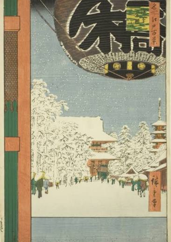
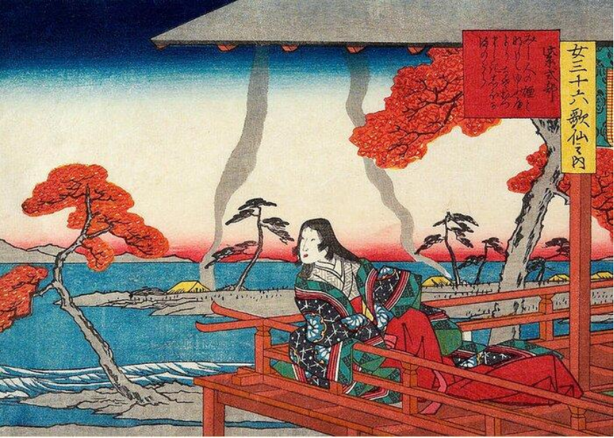
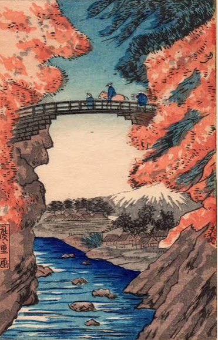
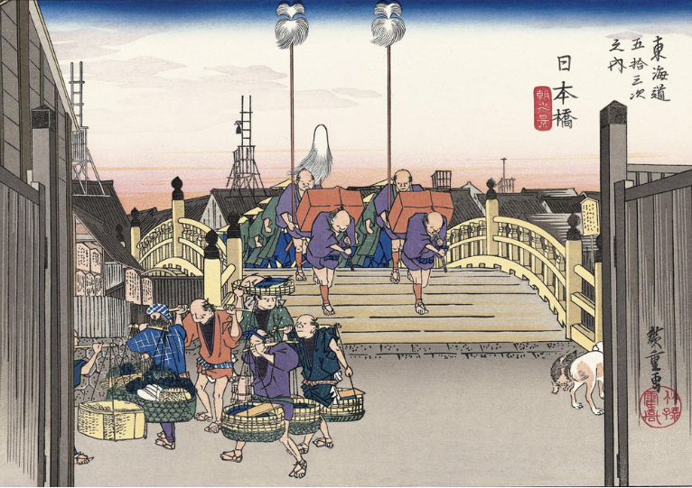
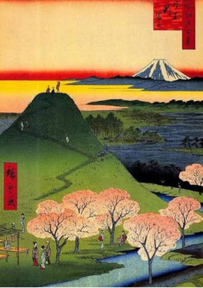
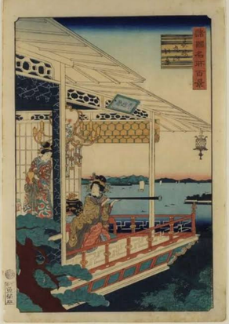
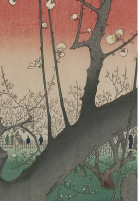
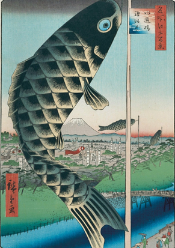
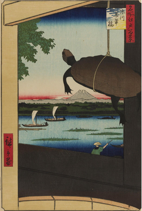

Text / Typography
Hiroshige uses typography when he signs his name in the same Japanese font. For example, in the artwork below, there is a large, bold Japanese character.
Kinryuzan Temple at Asakusa (1856)A LIFE IN PRINT
The life, landscapes, and visual principles of one of Japan’s most celebrated ukiyo-e artists.
01 / THE BEGINNING
Hiroshige was born Andō Tokutarō in Edo (now known as Tokyo) in 1797. At the age of 13, he inherited the family estate and lost his parents at the same time. At 15, he became a disciple of Utagawa Toyohiro and took on the name Hiroshige.



02 / THE ARTIST
Hiroshige began his career around 1818, at age 21. His first piece, Kyoka murasaki no maki, depicted a woman on a porch looking out at a lake, with trees, mountains, and camps with people in the background. Although not his most famous piece, it was his first.
The Fifty-three Stations of the Tōkaidō (1833–1834), his most famous series, portrayed woodblock prints depicting the journey between Edo (modern-day Tokyo) and Kyoto in Japan. It was known for its beautiful landscapes, weather and atmosphere, and everyday life. This popularity established him as one of Japan’s leading landscape artists as he continued to publish.
03 / VISUAL VOCABULARY
How Hiroshige used the building blocks of visual communication.

Hiroshige uses typography when he signs his name in the same Japanese font. For example, in the artwork below, there is a large, bold Japanese character.
Kinryuzan Temple at Asakusa (1856)
The artwork below displays a variety of colors, for example, shades of red, blue, green, white, and more.
New Fuji in Meguro (1857)
The artwork below has a faded color theme, which makes it look vintage and old.
View of Maruyama in Nagasaki (1859)04 / COMPOSITION

The color contrast slowly turns the red sunset into a white sky, transforming the bright red into white.
Plum Park in Kameido (1857)
The giant fish is emphasized by its size and different shades of color. Therefore being the expressing the main piece of the artwork.
New Fuji in Meguro (1857)
A clear one-sided artwork as a turtle is depicted hanging on one half, unlike the other.
Mannen Bridge, Fukagawa (1857)